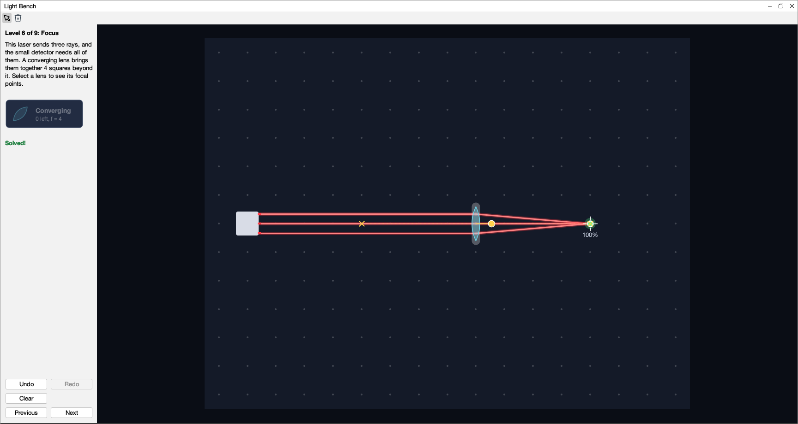
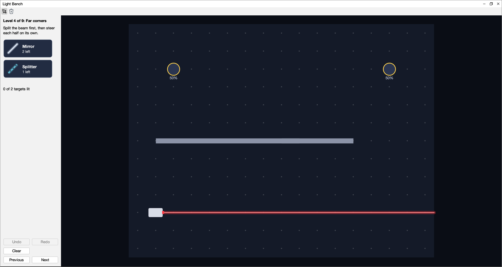

MDI Companion
MDI CompanionLight Bench
A laser puzzle built on MDI. Steer the beam onto every detector with mirrors, beam splitters, and converging and diverging lenses, across nine levels.
View mdi-optics on GitHub · Latest release
Download the latest runnable ZIP
Extract the ZIP, open a terminal in the extracted folder, and run
java -jar mdi-optics.jar. Use Java 17 or newer and keep the bundled
lib folder next to the JAR. No Maven build is required.
Before publication, the release workflow smoke-tests the runnable ZIP on Linux, Windows, Intel macOS, and Apple Silicon macOS with Java 17, launching it without Maven.
How to Play
Click a piece in the palette, then click a grid point to place it. Drag a piece to move it, and double-click it to turn it. Undo and redo work for every move. The number under a detector is the share of the laser’s power it needs.
Gallery




What It Demonstrates
- Optical pieces as draggable, rotatable MDI items, with MDI’s undo and redo
- A palette of drawn toggle buttons (
DrawnToggleButton) in place of icons - A ray tracer kept separate from the Swing code, with levels defined in JSON files
Build from source
git clone https://github.com/heddle/mdi-optics.git
cd mdi-optics
mvn compile exec:javaThe game requires Java 17 or newer and uses MDI 1.2.5, which Maven resolves automatically from Maven Central.